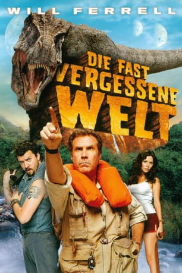

#5722 Die Fast vergessene Welt
Alternativ: Land of the Lost
 
 IMDB-Wertung: 5.4 / 10
IMDB-Wertung: 5.4 / 10  Metascore: 0
Metascore: 0 
Der Paläontologe Dr. Rick Marshall behauptet, dass es ein Paralleluniversum gebe, in das er mit einem selbstgebauten Apparat reisen könne. Seine Assistentin Holly bedrängt ihn, die Maschine zu testen. Prompt werden Rick, Holly und Outdoor-Freak Will in eine andere Dimension katapultiert, wo monströse Dinos noch quicklebendig sind.
Jahr: 2009
Dauer: 101 Minuten
FSK: 12
Land: USA Studio: Universal PicturesTonspuren: DTS - ,
Untertitel:
Auflösung: 1080p (1920x1040) Größe: 8458 MB
Genre: Sci-Fi, Komödie, Abenteuer
Regisseur:  Brad Silberling
Brad Silberling
Drehbuch: Klaus Gerlach
Soundtrack:
Darsteller:
 Will Ferrell als Dr. Rick Marshall
Will Ferrell als Dr. Rick Marshall Anna Friel als Holly Cantrell
Anna Friel als Holly Cantrell Danny McBride als Will Stanton
Danny McBride als Will Stanton Jorma Taccone als Chaka
Jorma Taccone als Chaka John Boylan als Enik
John Boylan als Enik- Matt Lauer als Matt Lauer
- Bobb'e J. Thompson als Tar Pits Kid
- Sierra McCormick als Tar Pits Kid
 Brian Huskey als Teacher
Brian Huskey als Teacher- Noah Crawford als Teenager
- Logan Manus als Teenager
- Ben Best als Ernie
- Scott Dorel als Elder Pakuni
- Sean Michael Guess als Elder Pakuni
- Chris Henchy als Stage Manager
 Kurt Carley als Sleestak
Kurt Carley als Sleestak- Todd Christian Hunter als Sleestak
- Marti Matulis als Sleestak
- Tim Soergel als Sleestak
- Douglas Tait als Sleestak
- Ana Alexander als Pakuni Woman
- Moran Atias als Pakuni Woman
 Eve Mauro als Pakuni Woman
Eve Mauro als Pakuni Woman- Pollyanna McIntosh als Pakuni Woman
- Ania Spiering als Pakuni Woman
 Paul Adelstein als Astronaut
Paul Adelstein als Astronaut Daamen J. Krall als Library Skull
Daamen J. Krall als Library Skull Leonard Nimoy als The Zarn
Leonard Nimoy als The Zarn- Landon Ashworth als Sleestak
- Trevor Brunsink als Background Sleestak
- Matt Kavanaugh als Sleestak
- Darren Kendrick als Background Sleestak
 Frederick Keeve als Background Sleestak
Frederick Keeve als Background Sleestak- Terence Leclere als Background Sleestak
- Nathan Luginbill als Background Sleestak
- Loyal Thomas Ruddell als Sleestak
- Kyle Weishaar als Background Sleestak
- Zach Callison als Tar Pits Kid , uncredited
- Kyle Derek als Sleestak , uncredited
- Mousa Kraish als Barry , uncredited
 Raymond Ochoa als Boy in Museum , uncredited
Raymond Ochoa als Boy in Museum , uncredited Michael Papajohn als Astronaut , uncredited
Michael Papajohn als Astronaut , uncredited- Bethani Radaker als Science Class Student , uncredited
- Kiernan Shipka als Tar Pits Kid , uncredited
- Dylan Sprayberry als Tar Pits Kid , uncredited
- Ralph Votrian als Statue , uncredited
- Shannon Lemke als Tar Pits Kid
- Stevie Wash Jr. als Tar Pits Kid
- Kevin Buitrago als Teenager
- Jon Kent Ethridge als Teenager
Datei: X:\2009(A-F)\Fast vergessene Welt, Die (2009, FSK12, 1920x1040).mkv seit 14.03.2017
Festplatte: HD 2008(G-Z)-2009(A-F)
 Es gibt insgesamt 91 Filme in der Gruppe '2009(A-F)'
Es gibt insgesamt 91 Filme in der Gruppe '2009(A-F)'